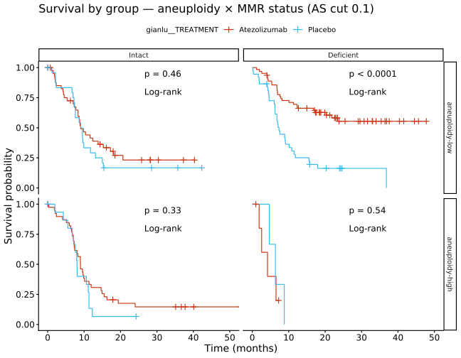
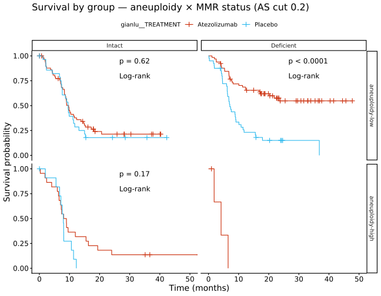
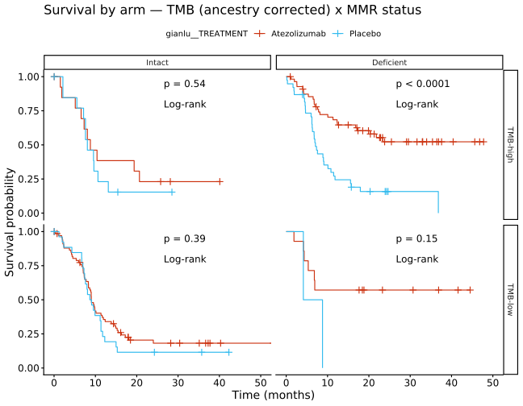
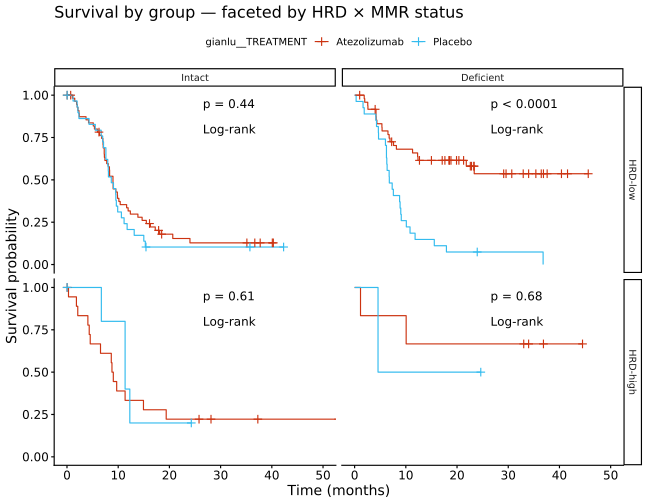
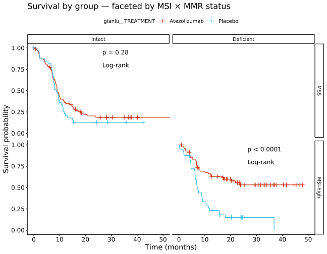
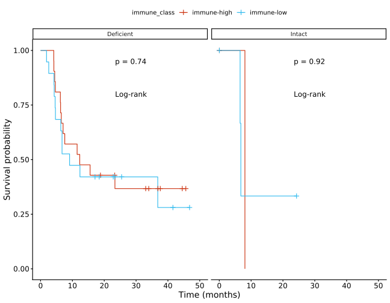
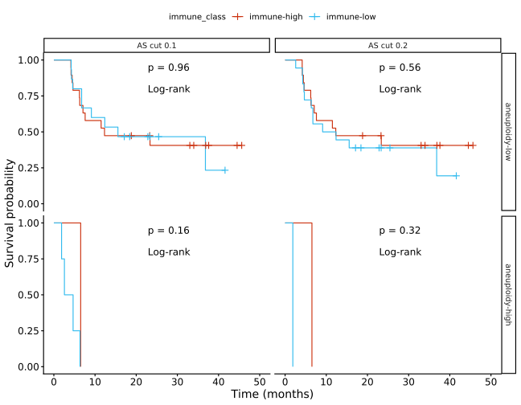

Last updated: 2026-09-25
Checks: 7 0
Knit directory:
attend_aneuploidy/analysis/
This reproducible R Markdown analysis was created with workflowr (version 1.7.2). The Checks tab describes the reproducibility checks that were applied when the results were created. The Past versions tab lists the development history.
Great! Since the R Markdown file has been committed to the Git repository, you know the exact version of the code that produced these results.
Great job! The global environment was empty. Objects defined in the global environment can affect the analysis in your R Markdown file in unknown ways. For reproduciblity it’s best to always run the code in an empty environment.
The command set.seed(20260622) was run prior to running
the code in the R Markdown file. Setting a seed ensures that any results
that rely on randomness, e.g. subsampling or permutations, are
reproducible.
Great job! Recording the operating system, R version, and package versions is critical for reproducibility.
Nice! There were no cached chunks for this analysis, so you can be confident that you successfully produced the results during this run.
Great job! Using relative paths to the files within your workflowr project makes it easier to run your code on other machines.
Great! You are using Git for version control. Tracking code development and connecting the code version to the results is critical for reproducibility.
The results in this page were generated with repository version 53d4271. See the Past versions tab to see a history of the changes made to the R Markdown and HTML files.
Note that you need to be careful to ensure that all relevant files for
the analysis have been committed to Git prior to generating the results
(you can use wflow_publish or
wflow_git_commit). workflowr only checks the R Markdown
file, but you know if there are other scripts or data files that it
depends on. Below is the status of the Git repository when the results
were generated:
Ignored files:
Ignored: .Rhistory
Ignored: .Rproj.user/
Ignored: .mcr_cache/
Ignored: data/aneu_scores.csv
Ignored: data/attend_barcodes.csv
Ignored: data/attend_data.xlsx
Ignored: data/clinical_gianlu_data.csv
Ignored: data/cnv_annotations/
Ignored: data/gistic/
Ignored: data/hrd_scores.csv
Ignored: data/msi_scores.csv
Ignored: data/old2_gistic/
Ignored: data/old_gistic/
Ignored: data/seg/
Ignored: data/tcga_2013/
Ignored: data/tmb_scores.csv
Ignored: data/variant_annotations/
Ignored: gistic2.sif
Ignored: output/clean_data/
Ignored: output/gistic_input/
Note that any generated files, e.g. HTML, png, CSS, etc., are not included in this status report because it is ok for generated content to have uncommitted changes.
These are the previous versions of the repository in which changes were
made to the R Markdown (analysis/02-survival.Rmd) and HTML
(docs/02-survival.html) files. If you’ve configured a
remote Git repository (see ?wflow_git_remote), click on the
hyperlinks in the table below to view the files as they were in that
past version.
| File | Version | Author | Date | Message |
|---|---|---|---|---|
| html | 53d4271 | sceriff0 | 2026-09-25 | :wrench: site building |
| Rmd | 0f67d88 | bolt3x | 2026-09-21 | :art: Every aneuploidy-keyed figure, at both cuts |
| Rmd | 0c4840a | bolt3x | 2026-09-14 | :art: One vocabulary, one order, and a page that says why a figure is missing |
| Rmd | 793a8f2 | bolt3x | 2026-09-07 | :recycle: Reorder the site 00-11, split 07, fold concordance into 01, add ProMisE |
Question. Does the treatment comparison behave differently in different molecular subgroups? Cohort. All 245 patients on the master; the immune-content panels are restricted to the imaged subset. Reads. attend_master_joined, plus the FlowPath/imaging join for immune_class. Out of scope. Everything that is not a survival model. Composition itself -> 04-aneuploidy-mmrd; the 6-month landmark split of this endpoint -> 05-response; concordance -> 01-data-integration.
Every figure below has the same structure. The two coloured curves are always the same comparison, attend_cols$km_group (the treatment arm); what changes between figures is how the cohort is split into panels — by aneuploidy and MMR status first, then TMB, HRD, MSI, and immune content. Each panel carries its own log-rank p-value, comparing the two arms within that panel only. A gap that is similar in every panel means the molecular axis does not modify the treatment effect; a gap that opens in one panel and closes in another might, and the interaction test after the headline figure puts a number on it.
Continuous scores are binarised by add_molecular_classes() at the configured thresholds: aneuploidy at 0.1 and 0.2 — both cuts are drawn, every time, see 00-methods — TMB at 10, HRD at 50. Every chunk is guarded by have_cols(), so the report knits to a legible skeleton before those column names are set.
The master table, with the binarised molecular classes added. The table below is a cross-tabulation of those five class variables — it shows how the cohort actually distributes across the panels used later, which is the fastest way to spot a panel that will be too small to interpret.
# quick visibility on the binarised classes, at both aneuploidy cuts: the same patients
# appear twice, so a cell that empties between the two cuts is a panel that will be
# uninterpretable in one half of every figure below.
master_cuts |>
count(as_cut_lab, aneuploidy_class, MMR_class, TMB_class, HRD_class, MSI_class) |>
arrange(as_cut_lab, desc(n)) |> head(24)# A tibble: 24 × 7
as_cut_lab aneuploidy_class MMR_class TMB_class HRD_class MSI_class n
<fct> <fct> <fct> <fct> <fct> <fct> <int>
1 AS cut 0.1 aneuploidy-low Deficient TMB-high HRD-low MSI-high 67
2 AS cut 0.1 aneuploidy-low Intact TMB-high HRD-low MSS 41
3 AS cut 0.1 aneuploidy-high Intact TMB-high HRD-low MSS 36
4 AS cut 0.1 aneuploidy-low Deficient TMB-high <NA> MSI-high 24
5 AS cut 0.1 aneuploidy-high Intact TMB-high HRD-high MSS 17
6 AS cut 0.1 aneuploidy-low Intact TMB-high <NA> MSS 11
7 AS cut 0.1 <NA> <NA> <NA> <NA> <NA> 11
8 AS cut 0.1 aneuploidy-high Deficient TMB-high HRD-low MSI-high 9
9 AS cut 0.1 aneuploidy-low Intact TMB-low HRD-low MSS 7
10 AS cut 0.1 aneuploidy-low Deficient TMB-high HRD-high MSI-high 7
# ℹ 14 more rowsA publication-style survival table (gtsummary::tbl_survfit) for the comparison group — survival at 1/2/3/5 years with confidence intervals. Guarded on the same columns as the curves below.
if (have_cols(master, attend_cols$surv_time, attend_cols$surv_event, attend_cols$km_group)) {
tryCatch(surv_table(master, group = attend_cols$km_group),
error = function(e) note_skip("surv_table skipped (gtsummary/cardx): ", conditionMessage(e)))
}| Characteristic | 12-month survival | 24-month survival | 36-month survival | 60-month survival |
|---|---|---|---|---|
| gianlu__TREATMENT | ||||
| Atezolizumab | 50% (42%, 59%) | 36% (28%, 45%) | 34% (27%, 44%) | 34% (27%, 44%) |
| Placebo | 23% (15%, 35%) | 14% (7.8%, 24%) | 14% (7.8%, 24%) | 6.8% (1.5%, 31%) |
The main result. Curves are the two treatment arms; columns are MMR status (proficient / deficient, from MMR_class) and rows are aneuploidy high vs low. Each panel’s log-rank p compares the two arms within that panel alone — it is not a test of aneuploidy or MMR. The grid is drawn once per aneuploidy cut (0.1 and 0.2), as a separate figure rather than a third facet because survminer panels on at most two variables; the patients are the same in both, only the row a patient sits in moves.
The table underneath gives each panel’s N and event count, with a small_n flag (n < 10 or fewer than 5 events). A panel carrying that flag can produce a dramatic-looking curve separation from a handful of patients; the flag is there so that is visible rather than inferred.
if (have_cols(master, attend_cols$surv_time, attend_cols$surv_event,
attend_cols$km_group, "aneuploidy_class", "MMR_class")) {
for (k in cuts) {
mk <- master_cuts |> filter(as_cut == k)
cat("\n\n#### AS cut ", k, "\n\n", sep = "")
p <- km_facet(mk, group = attend_cols$km_group,
facets = c("aneuploidy_class", "MMR_class"),
title = paste0("Survival by group — aneuploidy × MMR status (AS cut ", k, ")"))
if (!is.null(p)) print(p)
cnt <- km_panel_counts(mk, facets = c("aneuploidy_class", "MMR_class"))
if (nrow(cnt) > 0)
# print(), not a bare kable(): inside a loop the value is not auto-printed, and this
# chunk is results='asis' so the markdown table renders where it is emitted.
print(knitr::kable(cnt, caption = paste0(
"AS cut ", k, " — per-panel N / events across both arms (small_n = n<10 or events<5).")))
}
}
| Version | Author | Date |
|---|---|---|
| 53d4271 | sceriff0 | 2026-09-25 |
| aneuploidy_class | MMR_class | n | n_events | small_n |
|---|---|---|---|---|
| aneuploidy-high | Deficient | 9 | 7 | TRUE |
| aneuploidy-low | Deficient | 100 | 57 | FALSE |
| aneuploidy-high | Intact | 57 | 47 | FALSE |
| aneuploidy-low | Intact | 67 | 49 | FALSE |

| Version | Author | Date |
|---|---|---|
| 53d4271 | sceriff0 | 2026-09-25 |
| aneuploidy_class | MMR_class | n | n_events | small_n |
|---|---|---|---|---|
| aneuploidy-high | Deficient | 4 | 3 | TRUE |
| aneuploidy-low | Deficient | 105 | 61 | FALSE |
| aneuploidy-high | Intact | 35 | 30 | FALSE |
| aneuploidy-low | Intact | 89 | 66 | FALSE |
The Kaplan–Meier grid above is the headline result. The subgroup Cox model and the 3-way interaction test below are supporting evidence only — they quantify effects the KM panels already show and stress-test whether the aneuploidy × MMR split modifies the treatment effect. At this cohort’s size the 3-way interaction test is expected to be underpowered; a non-significant or NA result there is reported honestly (flagged, never suppressed) and should be read as suggestive, not confirmatory.
for (k in cuts) {
# The subgroup IS the cut: which patients are "aneuploidy-high" is exactly what moves, so
# this model is refitted per cut rather than fitted once and relabelled.
mmrd_aneuhigh <- master_cuts |>
dplyr::filter(as_cut == k,
MMR_class == attend_levels$mmr_deficient,
aneuploidy_class == "aneuploidy-high")
eff <- logrank_cox_effect(mmrd_aneuhigh, group = attend_cols$km_group)
if (have_cols(master, attend_cols$surv_time, attend_cols$surv_event, attend_cols$km_group,
"aneuploidy_class", "MMR_class") && isTRUE(eff$n_groups == 2)) {
small_flag <- eff$n < 20 || eff$n_events < 10
cat(sprintf("\n\n**AS cut %s — MMRd + aneuploidy-high subgroup: n = %d, events = %d%s**\n\n",
format(k), eff$n, eff$n_events,
if (small_flag) " — SMALL SAMPLE, treat as suggestive only" else ""))
ct <- tryCatch(cox_table(mmrd_aneuhigh, covariates = attend_cols$km_group),
error = function(e) { note_skip("cox_table skipped: ", conditionMessage(e)); NULL })
if (!is.null(ct))
print(knitr::kable(ct$tidy, digits = 3, caption = paste0(
"AS cut ", k, " — MMRd + aneuploidy-high, Cox PH: PFS ~ treatment arm (HR, 95% CI). ",
"n/events via logrank_cox_effect().")))
} else {
note_skip("AS cut ", k, ": MMRd × aneuploidy-high Cox subgroup skipped — <2 treatment ",
"arms present in this cell.")
}
}AS cut 0.1 — MMRd + aneuploidy-high subgroup: n = 9, events = 7 — SMALL SAMPLE, treat as suggestive only
NOTE: cox_table skipped: The package “broom.helpers” (>= 1.20.0) is required. NOTE: AS cut 0.2: MMRd × aneuploidy-high Cox subgroup skipped — <2 treatment arms present in this cell.
A three-way Cox model on the master, treatment arm x aneuploidy class x MMR status, so the subgroup Cox above can be read against a single formal test of whether the arms differ by subgroup rather than against a series of per-panel log-ranks. Refitted once per aneuploidy cut: the aneu term is the cut, so a single fit could only describe one of them.
for (k in cuts) {
d_int <- master_cuts |>
dplyr::filter(as_cut == k) |>
dplyr::mutate(dplyr::across(dplyr::all_of(attend_cols$surv_event), recode_event)) |>
dplyr::filter(dplyr::if_all(dplyr::all_of(c(attend_cols$surv_time, attend_cols$surv_event,
attend_cols$km_group, "aneuploidy_class", "MMR_class")), ~ !is.na(.))) |>
dplyr::mutate(arm = droplevels(as.factor(.data[[attend_cols$km_group]])),
aneu = droplevels(as.factor(aneuploidy_class)),
mmr = droplevels(as.factor(MMR_class)))
n_int <- nrow(d_int); events_int <- sum(d_int[[attend_cols$surv_event]] == 1, na.rm = TRUE)
levels_ok <- have_cols(master, attend_cols$surv_time, attend_cols$surv_event, attend_cols$km_group,
"aneuploidy_class", "MMR_class") &&
dplyr::n_distinct(d_int$arm) == 2 && dplyr::n_distinct(d_int$aneu) == 2 &&
dplyr::n_distinct(d_int$mmr) == 2
if (levels_ok && n_int >= 20 && events_int >= 10) {
ft <- attend_cols$surv_time; fe <- attend_cols$surv_event
full <- tryCatch(survival::coxph(stats::as.formula(sprintf(
"survival::Surv(`%s`, `%s`) ~ arm * aneu * mmr", ft, fe)), data = d_int),
error = function(e) NULL)
null <- tryCatch(survival::coxph(stats::as.formula(sprintf(
"survival::Surv(`%s`, `%s`) ~ arm + aneu + mmr", ft, fe)), data = d_int),
error = function(e) NULL)
if (!is.null(full) && !is.null(null)) {
# count only ESTIMATED (non-NA) coefficients: coxph keeps an aliased empty-cell
# term as an NA entry, so length() would inflate df and mis-calibrate the LRT.
ddf <- sum(!is.na(stats::coef(full))) - sum(!is.na(stats::coef(null)))
chi <- 2 * (as.numeric(stats::logLik(full)) - as.numeric(stats::logLik(null)))
p <- if (ddf > 0) stats::pchisq(chi, df = ddf, lower.tail = FALSE) else NA_real_
under <- n_int < 60 || events_int < 30
cat(sprintf("\n\n**AS cut %s — arm × aneuploidy × MMR interaction LRT**: n = %d, events = %d, df = %s, chi-sq = %.2f, p = %s%s\n\n",
format(k), n_int, events_int, ddf, chi,
if (is.na(p)) "NA (rank-deficient — an empty cell)" else formatC(p, digits = 3, format = "g"),
if (under) " — **UNDERPOWERED: interpret as suggestive, not confirmatory**" else ""))
} else note_skip("AS cut ", k, ": 3-way interaction Cox models failed to fit ",
"(rank-deficient/empty cell).")
} else note_skip(sprintf("AS cut %s: 3-way interaction skipped — need arm/aneu/MMR each 2 levels and n>=20/events>=10 (got n=%d, events=%d).", format(k), n_int, events_int))
}
**AS cut 0.1 — arm × aneuploidy × MMR interaction LRT**: n = 233, events = 160, df = 4, chi-sq = 16.95, p = 0.00197
**AS cut 0.2 — arm × aneuploidy × MMR interaction LRT**: n = 233, events = 160, df = 3, chi-sq = 17.48, p = 0.000563The same arm comparison, now panelled by TMB-high/low against MMR status — drawn twice, once per TMB definition.
Why twice: ATTEND’s sequencing is tumour-only, with no matched normal, so leftover germline variants inflate TMB. Because germline allele frequencies differ between ancestries, that inflation is ancestry-dependent (Nassar et al., Cancer Cell 2022). The pipeline therefore carries two definitions and never silently picks one:
Each definition is re-binarised at the same 10 mut/Mb cutoff by tmb_class_of(), so the only thing differing between the two figures is the TMB value itself. If a patient sits near the cutoff, the correction can move them across it — so comparing the two figures shows whether any survival signal is robust to the germline correction or is an artefact of it.
The ancestry-corrected figure is skipped entirely (not drawn empty) until attend_ancestry$clinical_col is set, because the column is all-NA before then.
tmb_defs02 <- tmb_defs_present(master) # normal + ancestry corrected
tmb_labs02 <- tmb_def_labels(tmb_defs02)
if (have_cols(master, attend_cols$surv_time, attend_cols$surv_event,
attend_cols$km_group, "MMR_class") && length(tmb_defs02) >= 1) {
for (i in seq_along(tmb_defs02)) {
d <- master |> mutate(TMB_class_def = tmb_class_of(.data[[tmb_defs02[[i]]]]))
if (all(is.na(d$TMB_class_def))) next # ancestry corrected before clinical_col is set
cat("\n\n#### ", tmb_labs02[i], " (`", tmb_defs02[[i]], "`)\n\n", sep = "")
p <- km_facet(d, group = attend_cols$km_group,
facets = c("TMB_class_def", "MMR_class"),
title = paste0("Survival by arm — ", tmb_labs02[i], " x MMR status"))
if (!is.null(p)) print(p)
}
}tmb__TMB_nassar)
| Version | Author | Date |
|---|---|---|
| 53d4271 | sceriff0 | 2026-09-25 |
Arms compared within panels of homologous-recombination-deficiency score (high vs low at 50, from hrd__) crossed with MMR status.
if (have_cols(master, attend_cols$surv_time, attend_cols$surv_event,
attend_cols$km_group, "HRD_class", "MMR_class")) {
km_facet(master, group = attend_cols$km_group,
facets = c("HRD_class", "MMR_class"),
title = "Survival by group — faceted by HRD × MMR status")
}
| Version | Author | Date |
|---|---|---|
| 53d4271 | sceriff0 | 2026-09-25 |
Arms compared within panels of microsatellite-instability status crossed with MMR status. MSI and MMR are biologically correlated — MMR loss is the usual cause of MSI — so the off-diagonal panels here are small by construction and often carry the small_n caveat.
if (have_cols(master, attend_cols$surv_time, attend_cols$surv_event,
attend_cols$km_group, "MSI_class", "MMR_class")) {
km_facet(master, group = attend_cols$km_group,
facets = c("MSI_class", "MMR_class"),
title = "Survival by group — faceted by MSI × MMR status")
}
| Version | Author | Date |
|---|---|---|
| 53d4271 | sceriff0 | 2026-09-25 |
Survival by immune content on the imaged cohort, which is why this section carries a different denominator from every other section above. Immune content is the CD45+ fraction inside the annotated region, read per patient from the FlowPath tree by ihc_patient_metrics() (the same helper 01-data-integration validates) and binarised at its median — a data-driven split, not a pre-registered threshold, so it is descriptive. Panels are MMR status; curves are immune-high vs immune-low.
ihc_pt <- tryCatch(ihc_patient_metrics(load_ihc_data(), load_imaging_data()),
error = function(e) NULL)
have_ihc <- !is.null(ihc_pt) && nrow(ihc_pt) > 0 && "cd45_over_inside" %in% names(ihc_pt)
if (have_ihc) {
ihc_surv <- ihc_pt |>
left_join(master |> select(pid, any_of(c(attend_cols$surv_time, attend_cols$surv_event,
attend_cols$mmr_status, attend_cols$aneuploidy,
"aneuploidy_class"))), by = "pid") |>
mutate(immune_class = if_else(cd45_over_inside >= median(cd45_over_inside, na.rm = TRUE),
"immune-high", "immune-low"))
cat("imaged patients with an immune split:", sum(!is.na(ihc_surv$immune_class)), "\n")
} else {
ihc_surv <- tibble()
cat("No FlowPath IHC data — the immune-content panels are skipped.\n")
}imaged patients with an immune split: 48 Treatment arm within each MMR stratum, split by immune content.
if (have_ihc && have_cols(ihc_surv, attend_cols$surv_time, attend_cols$surv_event,
attend_cols$mmr_status, "immune_class")) {
km_facet(ihc_surv, group = "immune_class", facets = attend_cols$mmr_status)
} else note_skip("survival columns not set in attend_cols — skipping KM by IHC feature.")
| Version | Author | Date |
|---|---|---|
| 53d4271 | sceriff0 | 2026-09-25 |
Aneuploidy class crossed with immune content. This panel keeps the MMR-deficient restriction it carried in its previous home: it was computed on the MMRd cell-type table, so widening it to every imaged patient would change the result rather than relocate it. Immune content is the same median split as above, recomputed inside the MMRd subset so the median is that subset’s own — and computed BEFORE the cut join, so the median is taken over patients rather than over patient-rows duplicated across the two cuts. Columns are the aneuploidy class, rows the two cuts.
mmrd_imaged <- if (have_ihc && attend_cols$mmr_status %in% names(ihc_surv))
ihc_surv |> filter(is_mmrd(.data[[attend_cols$mmr_status]])) else tibble()
if (nrow(mmrd_imaged) > 0) {
imm <- mmrd_imaged |>
mutate(immune_class = if_else(cd45_over_inside >= median(cd45_over_inside, na.rm = TRUE),
"immune-high", "immune-low"))
# The class at BOTH cuts, joined on after the median split above. imm itself keeps one
# row per patient; only this frame is long, and only it is faceted by cut.
imm_cuts <- imm |>
select(-any_of("aneuploidy_class")) |>
inner_join(master_cuts |> select(pid, as_cut_lab, aneuploidy_class), by = "pid")
if (have_cols(imm_cuts, attend_cols$surv_time, attend_cols$surv_event,
"immune_class", "aneuploidy_class")) {
km_facet(imm_cuts, group = "immune_class",
facets = c("aneuploidy_class", "as_cut_lab"))
} else note_skip("survival columns not set in attend_cols — skipping KM.")
} else note_skip("No MMR-deficient imaged patients — aneuploidy x immune KM skipped.")
| Version | Author | Date |
|---|---|---|
| 53d4271 | sceriff0 | 2026-09-25 |
sessionInfo()R version 4.3.2 (2023-10-31)
Platform: x86_64-pc-linux-gnu (64-bit)
Running under: Rocky Linux 9.5 (Blue Onyx)
Matrix products: default
BLAS/LAPACK: FlexiBLAS OPENBLAS; LAPACK version 3.11.0
locale:
[1] LC_CTYPE=C.UTF-8 LC_NUMERIC=C LC_TIME=C.UTF-8
[4] LC_COLLATE=C.UTF-8 LC_MONETARY=C.UTF-8 LC_MESSAGES=C.UTF-8
[7] LC_PAPER=C.UTF-8 LC_NAME=C LC_ADDRESS=C
[10] LC_TELEPHONE=C LC_MEASUREMENT=C.UTF-8 LC_IDENTIFICATION=C
time zone: Europe/Rome
tzcode source: system (glibc)
attached base packages:
[1] stats graphics grDevices utils datasets methods base
other attached packages:
[1] data.table_1.18.4 fs_2.1.0 readxl_1.5.0 gtsummary_2.5.1
[5] survminer_0.5.2 ggpubr_0.6.0 survival_3.8-11 here_1.0.2
[9] lubridate_1.9.5 forcats_1.0.1 stringr_1.6.0 dplyr_1.2.1
[13] purrr_1.0.2 readr_2.2.0 tidyr_1.3.2 tibble_3.3.1
[17] ggplot2_4.0.3 tidyverse_2.0.0
loaded via a namespace (and not attached):
[1] tidyselect_1.2.1 farver_2.1.2 S7_0.2.2
[4] fastmap_1.2.0 broom.helpers_1.14.0 promises_1.5.0
[7] digest_0.6.39 timechange_0.4.0 lifecycle_1.0.5
[10] magrittr_2.0.5 compiler_4.3.2 rlang_1.2.0
[13] sass_0.4.10 tools_4.3.2 utf8_1.2.6
[16] yaml_2.3.12 gt_1.3.0 knitr_1.51
[19] ggsignif_0.6.4 labeling_0.4.3 bit_4.6.0
[22] xml2_1.5.2 RColorBrewer_1.1-3 abind_1.4-5
[25] workflowr_1.7.2 withr_3.0.3 grid_4.3.2
[28] git2r_0.33.0 scales_1.4.0 dichromat_2.0-0.1
[31] cli_3.6.6 rmarkdown_2.31 crayon_1.5.3
[34] generics_0.1.4 otel_0.2.0 rstudioapi_0.15.0
[37] tzdb_0.5.0 commonmark_2.0.0 cachem_1.1.0
[40] splines_4.3.2 parallel_4.3.2 cellranger_1.1.0
[43] vctrs_0.7.3 Matrix_1.6-4 jsonlite_2.0.0
[46] carData_3.0-5 car_3.1-2 litedown_0.9
[49] hms_1.1.4 bit64_4.8.6 rstatix_1.1.0
[52] jquerylib_0.1.4 glue_1.8.1 stringi_1.8.7
[55] gtable_0.3.6 later_1.4.8 pillar_1.11.1
[58] htmltools_0.5.9 R6_2.6.1 rprojroot_2.1.1
[61] vroom_1.7.1 evaluate_1.0.5 lattice_0.22-5
[64] markdown_2.0 backports_1.4.1 cards_0.8.0
[67] broom_1.0.13 httpuv_1.6.12 bslib_0.9.0
[70] Rcpp_1.1.1-1.1 cardx_0.3.3 gridExtra_2.3.1
[73] whisker_0.4.1 xfun_0.58 pkgconfig_2.0.3
sessionInfo()R version 4.3.2 (2023-10-31)
Platform: x86_64-pc-linux-gnu (64-bit)
Running under: Rocky Linux 9.5 (Blue Onyx)
Matrix products: default
BLAS/LAPACK: FlexiBLAS OPENBLAS; LAPACK version 3.11.0
locale:
[1] LC_CTYPE=C.UTF-8 LC_NUMERIC=C LC_TIME=C.UTF-8
[4] LC_COLLATE=C.UTF-8 LC_MONETARY=C.UTF-8 LC_MESSAGES=C.UTF-8
[7] LC_PAPER=C.UTF-8 LC_NAME=C LC_ADDRESS=C
[10] LC_TELEPHONE=C LC_MEASUREMENT=C.UTF-8 LC_IDENTIFICATION=C
time zone: Europe/Rome
tzcode source: system (glibc)
attached base packages:
[1] stats graphics grDevices utils datasets methods base
other attached packages:
[1] data.table_1.18.4 fs_2.1.0 readxl_1.5.0 gtsummary_2.5.1
[5] survminer_0.5.2 ggpubr_0.6.0 survival_3.8-11 here_1.0.2
[9] lubridate_1.9.5 forcats_1.0.1 stringr_1.6.0 dplyr_1.2.1
[13] purrr_1.0.2 readr_2.2.0 tidyr_1.3.2 tibble_3.3.1
[17] ggplot2_4.0.3 tidyverse_2.0.0
loaded via a namespace (and not attached):
[1] tidyselect_1.2.1 farver_2.1.2 S7_0.2.2
[4] fastmap_1.2.0 broom.helpers_1.14.0 promises_1.5.0
[7] digest_0.6.39 timechange_0.4.0 lifecycle_1.0.5
[10] magrittr_2.0.5 compiler_4.3.2 rlang_1.2.0
[13] sass_0.4.10 tools_4.3.2 utf8_1.2.6
[16] yaml_2.3.12 gt_1.3.0 knitr_1.51
[19] ggsignif_0.6.4 labeling_0.4.3 bit_4.6.0
[22] xml2_1.5.2 RColorBrewer_1.1-3 abind_1.4-5
[25] workflowr_1.7.2 withr_3.0.3 grid_4.3.2
[28] git2r_0.33.0 scales_1.4.0 dichromat_2.0-0.1
[31] cli_3.6.6 rmarkdown_2.31 crayon_1.5.3
[34] generics_0.1.4 otel_0.2.0 rstudioapi_0.15.0
[37] tzdb_0.5.0 commonmark_2.0.0 cachem_1.1.0
[40] splines_4.3.2 parallel_4.3.2 cellranger_1.1.0
[43] vctrs_0.7.3 Matrix_1.6-4 jsonlite_2.0.0
[46] carData_3.0-5 car_3.1-2 litedown_0.9
[49] hms_1.1.4 bit64_4.8.6 rstatix_1.1.0
[52] jquerylib_0.1.4 glue_1.8.1 stringi_1.8.7
[55] gtable_0.3.6 later_1.4.8 pillar_1.11.1
[58] htmltools_0.5.9 R6_2.6.1 rprojroot_2.1.1
[61] vroom_1.7.1 evaluate_1.0.5 lattice_0.22-5
[64] markdown_2.0 backports_1.4.1 cards_0.8.0
[67] broom_1.0.13 httpuv_1.6.12 bslib_0.9.0
[70] Rcpp_1.1.1-1.1 cardx_0.3.3 gridExtra_2.3.1
[73] whisker_0.4.1 xfun_0.58 pkgconfig_2.0.3